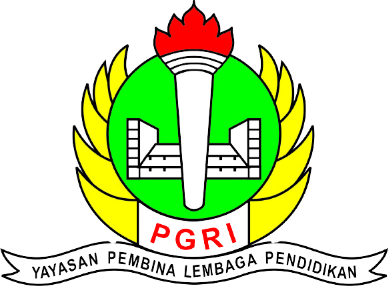

Universitas Pakuan
Walaupun merasa tertinggal di awal karena latar belakang saya yang bukan SMA, saya tetap giat belajar dan mau mengikuti berbagai kurikulum yang diberikan dikampus tak lepas dari itu saya tetap belajar banyak hal diluar kampus.

SMK PGRI 2 CIBINONG
Dari sinilah titik saya mengenal dunia programming namun masi sekedar basic saja, hanya sekedar mengenal function dan pengkondisian.